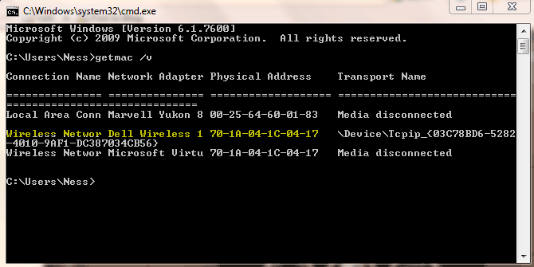

Wireless Network Configuration → Wifi
Encrypted Wireless
Wireless encryption provides a high level of assurance that only authorized users can access the network.
This allows us to ensure the security of our data as we use the wireless network on campus.
Benefits of Encrypted WiFi:
- Secure Data Transmission
- Authenticate only once per device
- Faster speeds (802.11ac,802.11n)
Where do I go to register my computer?
http://www.kongu.edu/support/WifiRegistrationform.pdf
How Do I Find My MAC Address?
A MAC address is a unique 12-digit number assigned to your computer by the manufacturer. Each digit is a number from 0-9 or a letter from A-F. Sometimes the digits of a MAC address are separated by colons or dashes. Examples of possible MAC addresses include: 080007A92BFC, 09:00:07:A9:B2:EB, or 09-10-4A-B9-E2-A4.
- Step1: Disable Random MAC Address on Windows 10 and windows 11 Computers
Select the 'Start' button in the bottom left corner of the screen
- Select the gear icon to go to 'Settings'
- Select 'Network and Internet'
- Select 'Wifi'
- Set 'Use random hardware addresses' to 'Off'.
How to Use Randam MAC address Video
Method 1: Windows 10
- Right-click the Wi-Fi icon located on the right side of the task bari>
- Select Open Network & Internet Settings
- In the left pane, select Wi-Fi
- In the right pane, select Hardware Properties
- Note the Physical address (MAC): that is displayed
Method 2: Windows 10
- From the tile screen, select the tile that says “Desktop.”
- From the taskbar, select the Internet Access icon
- Select “Open Network and Sharing Center”
- Select “Change adapter settings” on the left side of screen
- Double click on Wi-Fi
- Select “Properties” and now hover over the “connect using:” box and the Mac address will appear.
Windows 7
- Go to Start > Run
- Type: cmd > click OK
- Type: "getmac /V" (without the parentheses) > press enter
- Record the wireless address; if there is more than one, use the Wireless Physical address

How Do I Find My MAC Address?
Windows XP Computers
- Go to Start > Run
- Type: cmd > click OK
- Type: "getmac /V" (without the parentheses) > press enter
- Record the wireless address; if there is more than one, use the Wireless Physical address
How Do I Find My MAC Address?
Macintosh (OS X):
If your computer is running OS X, it is best to have it upgraded to at least 10.1.
- From the dock, select "System Preferences".
- Select the "Network" Pane.
- With the AirPort tab selected, the number next to "Airport ID:" is your MAC address.
How Do I Find My MAC Address?
Android Phone
- From the Home screen, press Menu.
- Tap Settings.
- Slide the screen upward, and then tap About phone.
- Tap Status.
- Tap and slide up to view the Wi-Fi MAC address.
How Do I Find My MAC Address?
iPhone/iTouch/iPad:
- Click Settings
- General
- About
- Scroll to Wifi Address